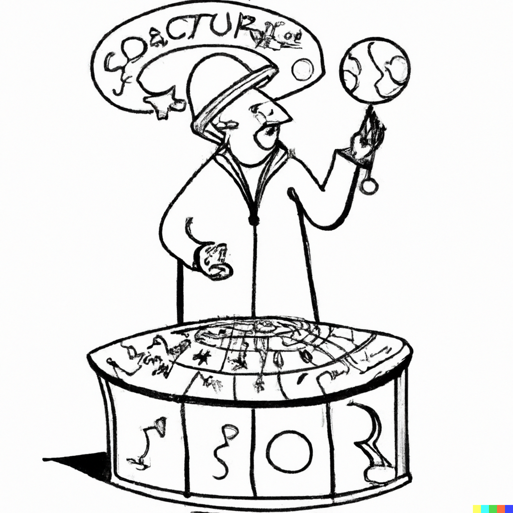

Roots of forecasting extend very much to the beginning of human history. In their desire to predict the future, people have attempted to make forecasts of their own, or have used the services of others. This desire to guess what was to come, has been necessitated by potential benefits such information could offer.
For many centuries, because the weather was the single most important factor that impacted the livelihood of people and, indeed, the fate of civilizations,2 A sequence of droughts toward the end of the ninth century is considered one of the key reasons for the collapse of the Classic Mayan Civilization (Hodell, Curtis, and Brenner 1995). much of forecasting revolved around weather forecasting. Early attempts at weather forecasting were rather simplistic. The Babylonians, for example, based their weather forecasts on the appearance of clouds. Over time, an advancement in the studies of physics and related fields, on the one hand, and the invention of measuring instruments such as barometer and thermometer, on the other hand, contributed to the development of the study of meteorology, the way we know it. The birth of the modern weather forecast, however, is attributed to the invention of the telegraph, which made it possible for the weather forecast to arrive sooner than the weather itself.
Much like a better understanding of the laws of physics facilitated the inception of meteorological research, the development of the study of econometrics allowed for the introduction of the more rigorous forecasting methods. And as with the telegraph back in the 19th century, the development of the modern computer in the 20th century facilitated the effective use of econometric methods for economic forecasting. Toward the end of the 20th century, and particularly from the beginning of the 21st century, the evolution of the Internet and the massive increase in computing power allowed the storage and distribution of granular data that has further aided the advancement of the methods and practices of forecasting.
All methods—primitive or complex, spurious or scientifically substantiated—have one thing in common: they all rely (or, at least, pretend to rely) upon information. Information is key in forecasting. It comes in many forms, and is condensed into data. When organized and stored in a certain way – chronologically and at regular intervals – we end up with the time series data. A diverse set of forecasting methods typically rely on insights from econometric analysis of time series. In time series analysis, the implied assumption is that the past tends to repeat itself, at least to some extent. So, if we well study the past, we may be able to forecast an event with some degree of accuracy.
Accurate forecasting is difficult. Indeed, forecasting is difficult because of all the unknowns we deal with in the process.3 Donald Rumsfeld, the U.S. Secretary of Defence, once famously said: ‘As we know, there are known knowns; there are things we know we know. We also know there are known unknowns; that is to say we know there are some things we do not know. But there are also unknown unknowns—the ones we don’t know we don’t know.’ In the context of model-based forecasting, these unknowns are: (i) that we don’t know the true model, so we assume one; (ii) that we don’t know the true parameters of the model, so we estimate those; and (iii) that we don’t know the future, and there is nothing we can do about it. As a result, there is no such thing as a perfect forecast, even if by fluke we were to exactly predict an outcome of an event. But some methods can yield more accurate forecasts, on average, than others. And in search of such methods, the study of time series econometrics has evolved.
Page built: 2022-11-06 using R version 4.2.1 (2022-06-23 ucrt)